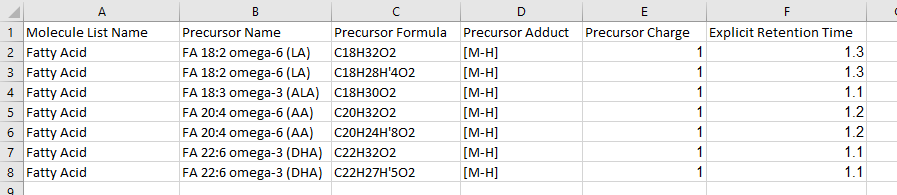
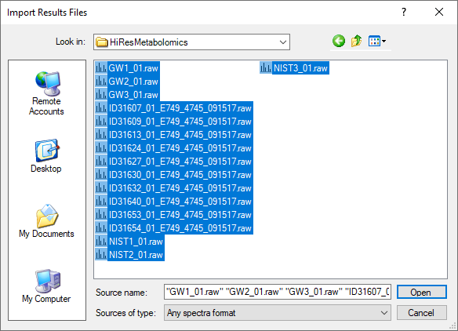
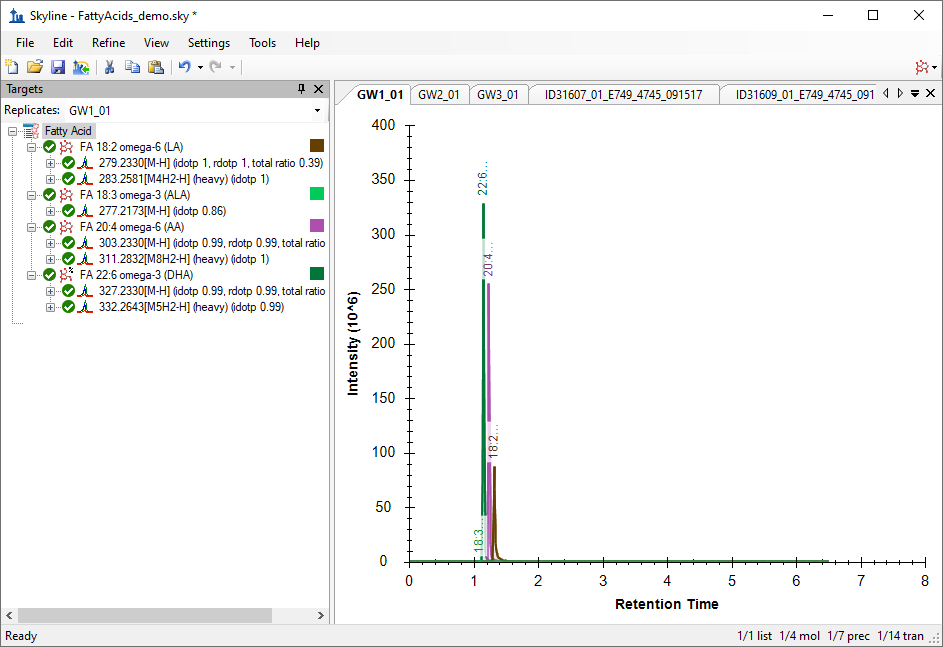
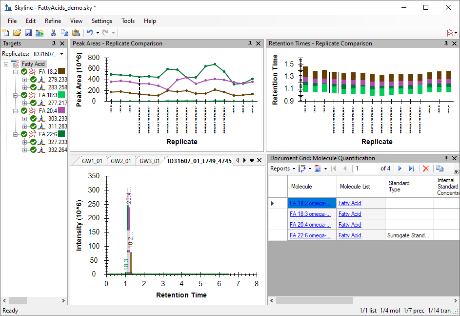
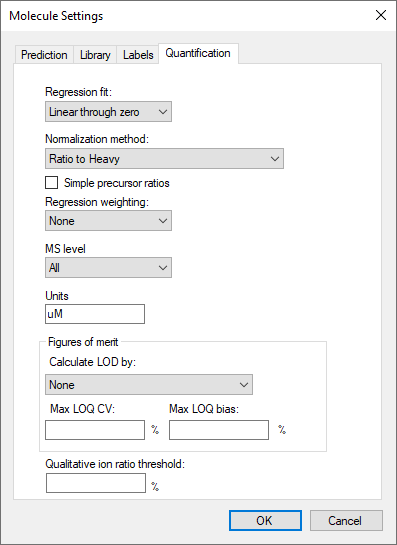
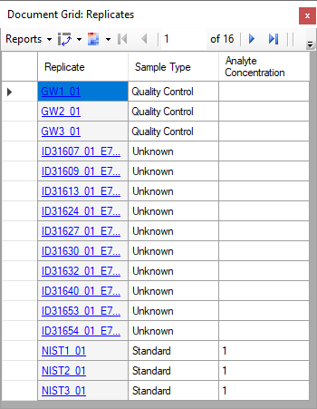
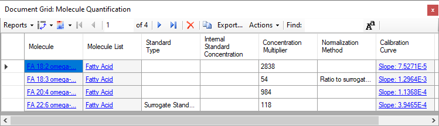
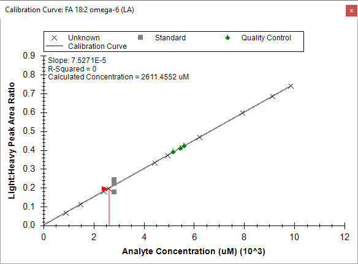

The Skyline Targeted Mass Spectrometry Environment provides informative visual displays of the raw mass spectrometer data you import into your Skyline documents. Originally developed for proteomics use, Skyline has been extended to work with generalized molecules. This tutorial explores using Skyline for targeted quantification of small molecules using high resolution mass spectra.
In this tutorial, you will learn about Quantification of Polyunsaturated Fatty Acids in Plasma using NIST SRM-1950 as a single-point external calibrant, used along with stable-isotope labeled internal standards.
You will explore:
Skyline aims to provide a vendor-neutral platform for targeted quantitative mass spectrometry research. It can import raw data from the instrument vendors Agilent, SCIEX, Bruker, Shimadzu, Thermo-Scientific, and Waters. The ability to import data across various instrument platforms facilitates cross-instrument comparisons and multi-site studies. This remains equally true in using it to target small molecules, as it has been for years in the field of proteomics.
If you have not already looked at the “Skyline Small Molecule Targets” tutorial you should do so now, in order to pick up a few basics about how Skyline works with small molecule descriptions including chemical formulas and adducts.
To start this tutorial, download the following ZIP file:
https://skyline.ms/tutorials/HiResMetabolomics.zip
Extract the files in it to a folder on your computer, like:
C:\Users\bspratt\Documents
This will create a new folder:
C:\Users\bspratt\Documents\HiResMetabolomics
It will contain all the files necessary for this tutorial.
If you have been using Skyline prior to starting this tutorial, it is a good idea to revert Skyline to its default settings. To do so:

The document settings in this instance of Skyline have now been reset to the default.
Since this tutorial covers a small molecule topic, you can choose the molecule interface by doing the following:

Skyline is operating in molecule mode which is displayed by the molecule icon in the upper right-hand corner of the Skyline window. Its original proteomics menus and controls are now hidden, allowing you to focus on small molecule analysis.
To add a set of target transitions for the small molecules in this experiment, do the following:
In Excel, it will look something like this:

But again, the .csv version will work just as well.
This transition list specifies chemical formulas for the molecules of interest which Skyline can use to create targets for isotopes of the molecules.
When Skyline reads a small molecule transition list like this one, it offers you two choices:
We would like to include the M+1 isotopes, so now you will review the transition settings and make some changes including those needed to add M+1 isotope peak precursors transitions to the Skyline document. To do this, perform the following steps:
The Transitions Settings form should look like this:

| NOTE: The “p” setting in Ion Types on the Filter tab means you are interested in precursor ion transitions. This Skyline document contains only precursor transitions, but if there were also fragment transitions in the input transition list we would set this to “f, p”. |
The Transitions Settings form should look like this:

Now we are ready to import the transition list.
Skyline will show the Insert Transition List form, looking something like this:

Skyline will show the Import Transition List: Identify Columns form:

Make sure that the Molecules radio button is selected.
Skyline reports that there are inconsistencies in the data: the precursor adducts are all [M-H] but the precursor charges are declared as +1.

This is easy to correct:
The precursor adduct is all the information that is needed.

Notice that the first two entries are a heavy/light labeled pair based on having the same name and formulas that differ only in isotopic labeling (four of the hydrogens are replaced by Deuterium in the second formula). Skyline will recognize these as heavy/light labeled pairs.
Skyline notices that your document’s Transition settings allow for calculating transitions in addition to those explicitly included in the input transition list, and offers you a choice:

The additional seven precursor transitions are the M+1 isotopes of the targets in the input transition list that Skyline can generate based on the document’s Transition settings.
(As noted in the message, if you happen to click Disable you can still get the M+1 targets by using the “Refine > Advanced” menu item.)
Skyline imports the transition list and shows the result in the Targets window.
Your Skyline window should now look like this, displaying a tree of polyunsaturated fatty acids, along with their stable-isotope internal standards (as applicable):

Note that for the molecules with a heavy labeled precursor, the label is expressed as part of the adduct description for the heavy variant. The “[M4H2-H]” adduct tells you that four hydrogen atoms in the molecule are replaced by deuterium or H2 (“M4H2”) and that it is ionized by a proton loss (“-H”).
You will notice that ALA (alpha-linoleic acid) does not have a heavy-labeled precursor. Instead, it will be assigned a different stable-isotope labeled molecule as its surrogate standard. In this case d5-DHA will be used because it is the closest in retention time. To prepare for this association, do the following:

Now the experimental mass spectrometer results can be imported.
Perform the following steps:
The Import Results Files form should look like this:

The files should import within 30 seconds or so, leaving your Skyline window looking like this:

To take advantage of the Skyline summary graphs for viewing individual targets, do the following:
The Skyline window should now look like this:

Looking at the Retention Times – Replicate Comparison window, you can see by the lack of outliers that Skyline did not have any problems with peak integration.
Next, follow these steps to prepare Skyline to produce calibrated quantitative values for the targeted molecules based on an external single-point calibration run:
The Molecule Settings form should look like this:

Return to the Document Grid view and do the following:
To establish the role of each of the samples (replicates) in the study, as a standard, an unknown, or a quality control run, edit the Sample Type and Analyte Concentration cells for each row as necessary so the grid looks like this:

In this situation, the concentration given for the NIST sample (NIST-SRM-1950) is entered as “1”, since all analytes have a different concentration. Think of this as establishing your standard as “One NIST Unit”. Therefore, in the next step, the concentration multipliers will each be given as the actual concentration of the analyte in the NIST SRM-1950 in order to adjust the target concentration of those analytes to their respective reference values.

The default normalization method is “Ratio to Heavy” when using stable-isotope internal standards, but you need to set the “FA 18:3” analyte to use the previously-defined surrogate standard as the denominator in the analyte to standard ratio.
Each entry in the Calibration Curve column is a clickable link that shows and activates the Calibration Curve view for the molecule in that row.
The Calibration Curve view will appear looking like this:

Note that the calibration curve by default has an intercept of 0, as defined by the method of quantification (Settings menu, Molecule Settings, Quantification tab). Using a single concentration in the external calibration runs defines a “single point” at that concentration and the average Light:Heavy ratio of the measured runs. This point and the zero intercept, thus, define the linear equation used to calibrate all other runs. The Calibration Curve graph shows the Unknown and Quality Control points plotted on that line, because you did not enter known concentrations for them. In some experiments, quality control runs are used where the concentrations are known, but in this case the quality control runs are technical replicates of a sample pooled from the unknown samples.
The Document Grid or Report Grid can be used to export quantitative data (in micromolar) for each sample analyzed.
In this tutorial, you have learned how to create a Skyline document that targets small molecules specified as precursor ion chemical formulas and adducts. You imported a multi-replicate data set collected on a Thermo Q Exactive Orbitrap mass spectrometer for a set of plasma samples, , and saw how many existing Skyline features created initially for targeted proteomics use can now be applied to small molecule data. You applied external single-point calibration to derive micromolar values for each analyte in each run where the concentration was unknown.